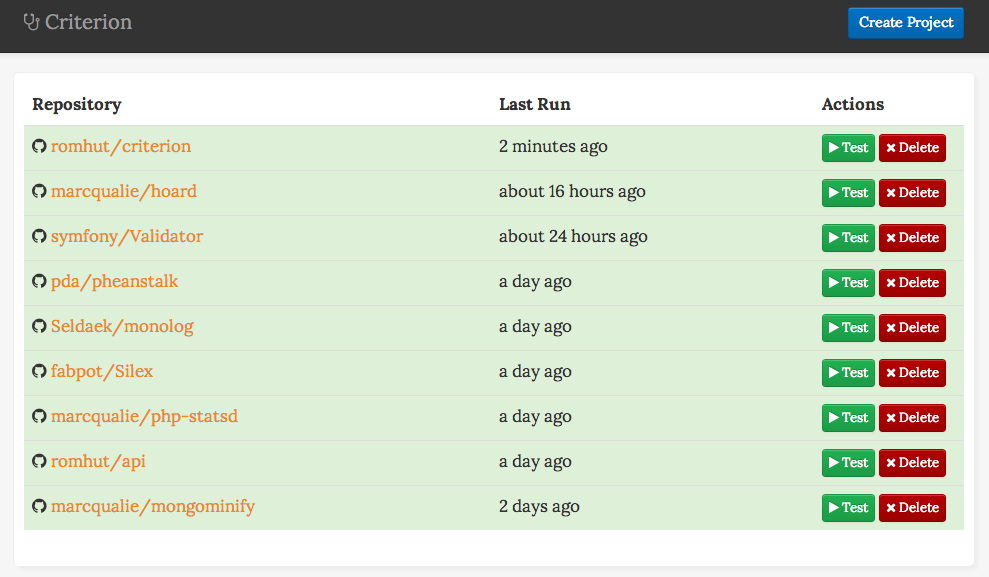

Criterion is a Continuous Integration app built in PHP using MongoDB.
This project is maintained by romhut
Criterion is a Continuous Integration app built in PHP using MongoDB. Criterion is very easy to setup, and you can add GIT repositories from any provider, and run any commands you wish against it.
Criterion will auto detect test environments if no .criterion.yml file is provided. This means you can setup CI with no changes to your code at all. For example, below we are testing a few libraries that have never even heard of Criterion, yet they still run.
 Please note: This only works for phpunit testing environments right now, but we will be adding more in the future.$ composer install && bin/cli install
Having trouble with Criterion? Tweet us @romhut or submit an issue on Github.